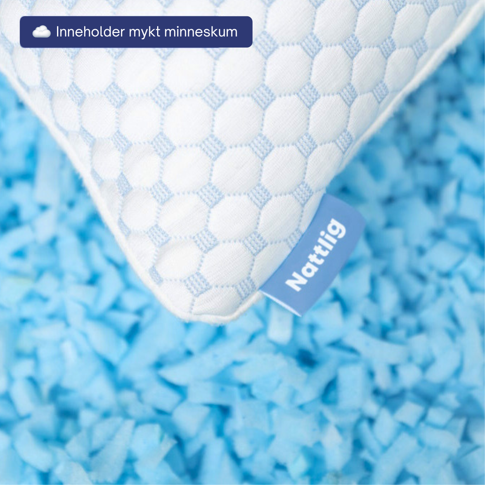
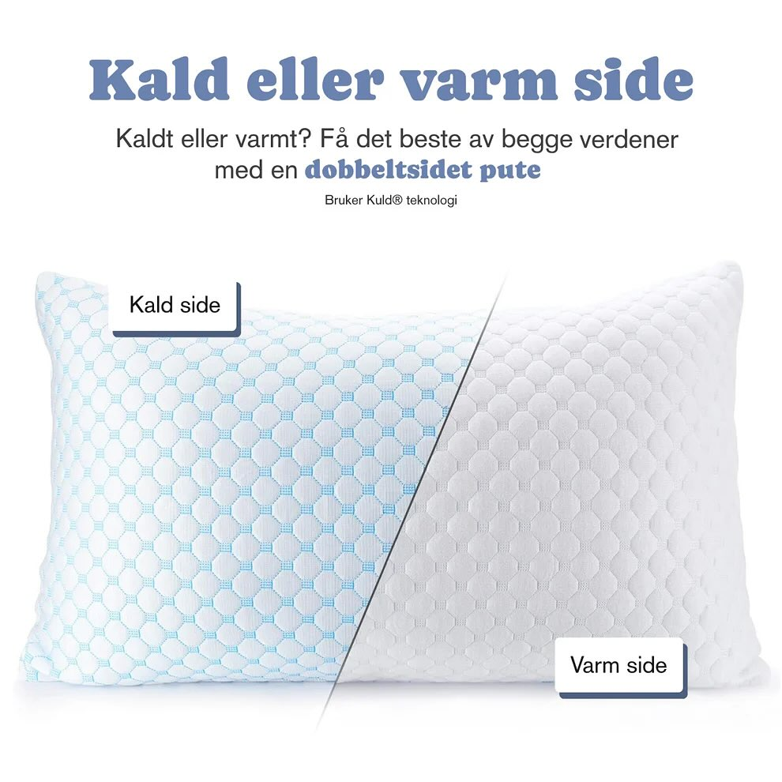
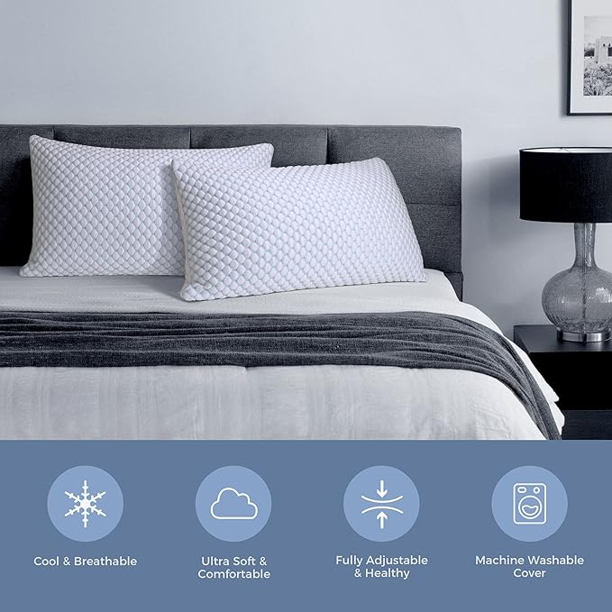
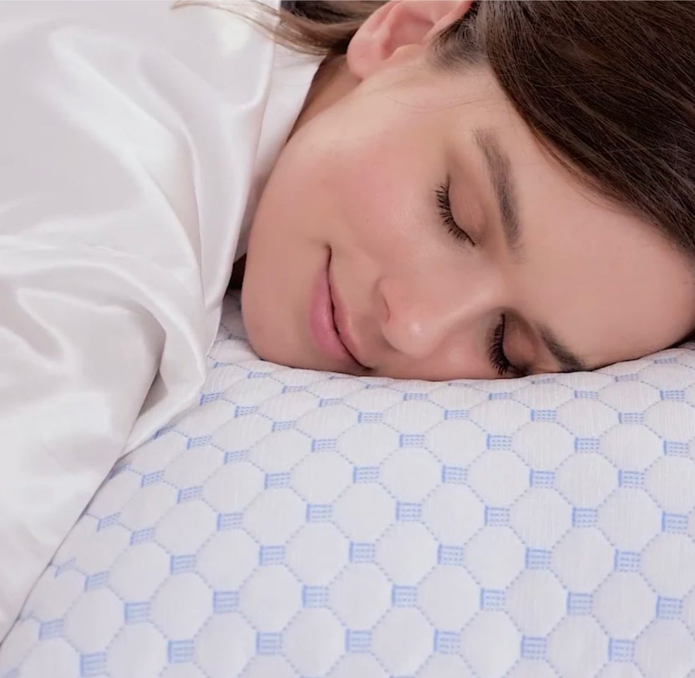

t.classList.remove('border-nattlig')); this.classList.add('border-nattlig')">
t.classList.remove('border-nattlig')); this.classList.add('border-nattlig')">
t.classList.remove('border-nattlig')); this.classList.add('border-nattlig')">
t.classList.remove('border-nattlig')); this.classList.add('border-nattlig')">Nattlig-puten er fylt med minneskum. Du tar ut akkurat så mye du trenger — så høyden og fastheten passer DIN nakke. Putevaret har en behagelig kjøligere side.
Til DIN sovestilling
Du tar ut akkurat så mye du trenger
Behagelig svalere — ikke is-kald
Hudvennlig, fukt-transport
| Type | Justerbar minneskum-pute |
| Mål | 50 × 70 cm (standard nordisk) |
| Vekt | 1-1,5 kg |
| Indre fyll | Minneskum (du tar ut til høyden passer) |
| Putevar – kjølig side | Bambusfiber-blanding med kjøligere overflate |
| Putevar – vanlig side | 100% bambusfiber |
| Justerbar høyde | 5-15 cm (ta ut fyll) |
| Vask – ytterstrekk | Maskinvask 30°C, ikke tørketrommel |
| Garanti | 90 netter prøvenetter + 1 års produktgaranti |
| Produksjon | Pakket og sendt fra Norge |
Det avhenger av sovestillingen. Sidesovere har ofte 12-14 cm høyde. Ryggsovere 8-10 cm. Magesovere 5-7 cm. Du kan justere når du vil — det riktige svaret er det som passer DEG.
Behagelig svalere, ikke ekstrem. Putevaret har en kjøligere overflate på den ene siden — du merker forskjellen, men det er ikke is-kald. Tanken er at du vender på puta når du sover varmt.
De fleste rapporterer endring innen 7-14 netter. Minneskum har en innkjøringsperiode der formen tilpasser seg deg. Gi puta minst 14 dager før du dømmer.
Vi lufter alle puter 7 dager før forsendelse. Det skal ikke lukte ved levering. Hvis du fortsatt merker lukt: returnér gratis. Vi har null toleranse for off-gassing.
90 netter prøv hjemme. Returnér gratis og få pengene tilbake. Ingen spørsmål.
Putevaret er maskinvaskbart på 30°C. Indre minneskum-fyll luftes (ikke vask). Tørketrommel er ikke OK.
Ja. 50 × 70 cm er standard nordisk størrelse. Den passer i alle norske putevar.
90 netters prøvenetter (vs 33 hos The Nap). Norsk-bygget. Putevar med kjøligere side. Du kan justere alle dimensjonene selv — du tar ut akkurat så mye fyll du trenger.
2-pakken er den vanligste valget hos par — samme produkt, justerbar uavhengig av hverandre.
Bestill 2 stk — 1 198 kr →